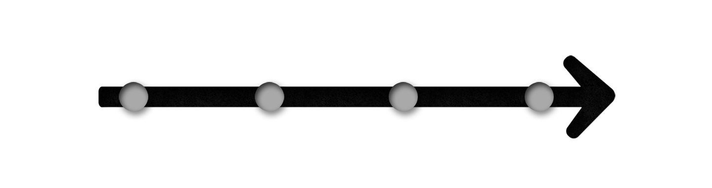

Разработка, производство, монтаж
изделий из искусственного
камня и стеклопластика
г. Ессентуки
+7 (928) 828 37 95
барные стойки
подоконники
столешницы
на кухню
в ванную
мойки и раковины
стеновые панели
плинтуса
Заказать звонок бесплатно
Мы знаем как вам помочь!
Мы сотрудничаем с производителями мебели, что позволяет вам получить гармоничное изделие в более сжатые сроки.
- разработка, изготовление и монтаж от 14 дней
- от 7 дней при заказе за месяц
- 5% скидка при 100% предоплате
9 проблем которые
мы можем решить
Уникальная технология бесшовной стыковки
не оставляет видимых следов при срасщивании габаритных изделий и не позволяет грязи накапливаться в швах.
Возможность подобрать цвет более точно
а также возможность дополнить дизайнерскими эффектами, отсутствующих в натуральном камне.
Единственный материал
позволяющий сделать столешницу с влитой мойкой. Все изделие будет монолитным.
Не трескается, отсутствуют поры, безшовно стыкуется
теплый на ощупь, радиоактивный фон отсутствует, поддается ремонту и легко восстановить первоначальный вид.
При изготовлении наших изделий мы используем
высокие технологии, которые так же исспользуют в самолетостроении, кораблестроении, медицине, химической прмышленности.
Технология изготовления
позволяет изготовить изделие практически любой формы, можно не ограничивать свою фантазию.
Мы не экономим на качестве.
При изготовлении столешниц мы используем материалы от известных и зарекомендовавших себя производителей. (несколько названий поставщиков)
Это экологично.
Не выделяет ни запахов ни вредных веществ. Изделия из этого материала предпочитают использовать в медицинских учереждениях.
Является отличным дизайнерским решением.
Имеет более 350 цветовых решений и оригинальных эффектов, таких как блестки, перламутр и даже свечение в темноте.
4 факта о нас
Часто задающие вопросы
Какая может быть толщина столешниц из искусственного камня?
Толщина столешницы из GraniStone зависит от толщины напыления и количества листов ДСП, составляющих основу изделия. Толщина напыления составляет от 1,5 до 3 мм. Толщина листа ДСП – 16 мм. Стандартная, общепринятая толщина столешницы 40мм.
Насколько искусственный камень экологически чистый материал?
Изначально искусственный камень GraniStone находится в жидком состоянии. В процессе изготовления в него добавляется специальный катализатор, и происходит химическая реакция, в результате которой материал застывает. В процессе реакции некоторая доля вредных веществ, действительно, присутствует, но как только процесс завершается, прекращаются и вредные выделения. В готовом состоянии изделия из искусственного камня соответствуют всем санитарным нормам.
Можно ли резать на столешницах из искусственного камня?
Можно. Однако от ножа на поверхности столешницы из искусственного камня, как и на любой другой, появится сетка царапин. Царапины легко полируются, но лучше всё же воспользоваться специальными разделочными досками.
Как ухаживать за камнем?
Искусственный камень GraniStone требует минимального ухода. Его достаточно протереть любым моющим средством. Абразива этот материал не боится, то есть можно использовать любую чистящую пасту или порошок. Камень не боится химикатов, поэтому для удаления каких-то особых загрязнений (например, если ребенок изрисовал поверхность фломастером) можно использовать ацетон.
Разработка, производство, монтаж
изделий из искусственного
камня и стеклопластика
г. Ессентуки
+7 (928) 828 37 95